Schoonheidssalon en pedicure in Aalten
Wat een weldaed.
In onze schuur aan de Barloseweg zorgen we voor je huid, je handen en je voeten. Met natuurlijke producten, eerlijk advies en echt even tijd voor jezelf.
4,7 uit 15 Google-reviews
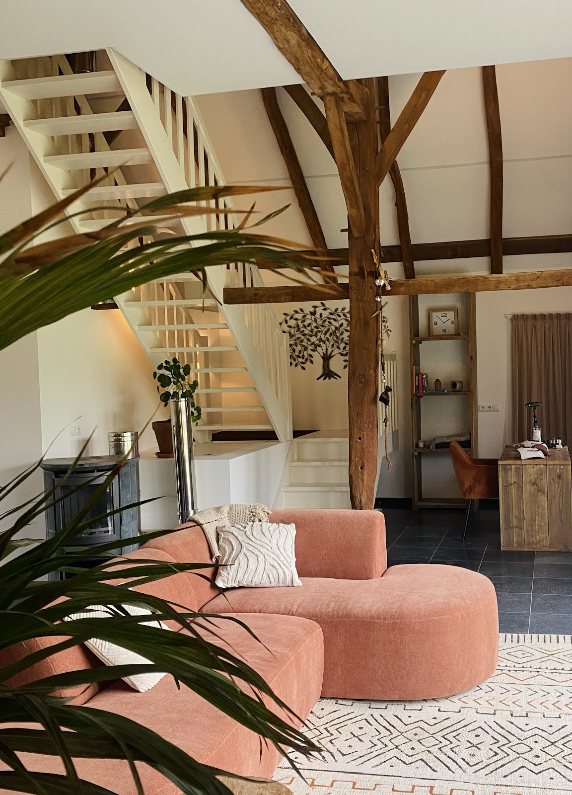
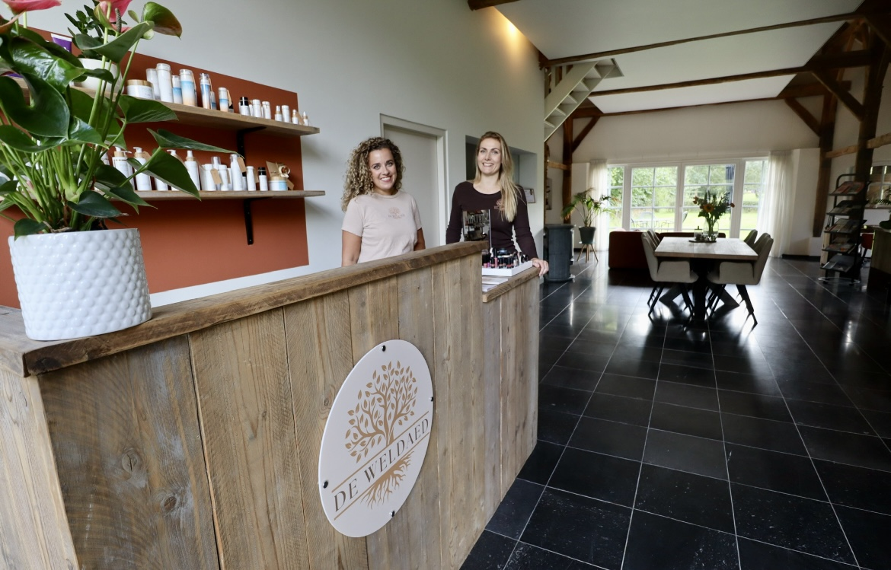
Binnenkomen en meteen op je gemak.
Bij de Weldaed sta jij centraal. We nemen de tijd om te kijken wat je huid of je voeten nodig hebben, en je krijgt eerlijk advies. Zin in een praatje? Graag. Liever je ogen dicht? Ook goed.
- BetrouwbaarEerlijk advies en kwaliteit waar je op kunt rekenen.
- NatuurlijkDuurzame, huidvriendelijke producten.
- PersoonlijkAandacht voor jouw wensen, elke keer weer.
Waar we je mee verwennen
Van een snelle wenkbrauwcorrectie tot een uitgebreide gezichtsbehandeling met massage. Twijfel je wat bij je past? Bel even, we denken graag mee.
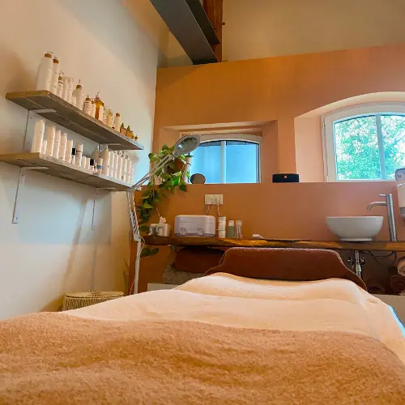
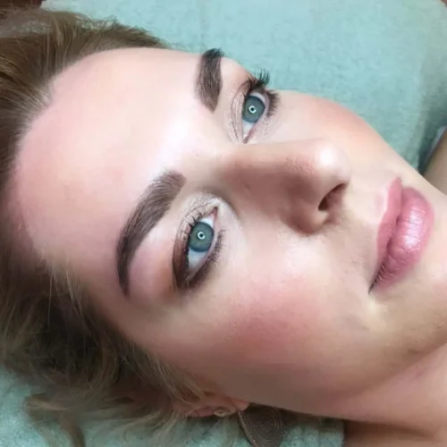
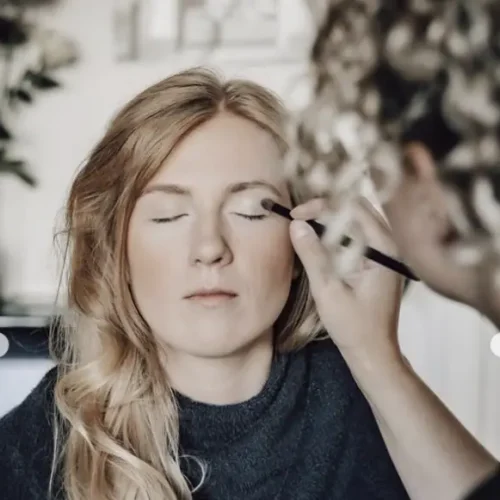
GezichtsbehandelingenHuidverbetering en ontspanning in één
Je hebt maar één huid, daar ga je zuinig mee om. Tijdens de behandeling kijken we naar de conditie van je huid en hoe we die samen kunnen verbeteren. Van een korte behandeling tot een uitgebreide met heerlijke massages.
Voor huidverbetering bieden we ook microneedling, biopeeling en bindweefselmassage.
MassageOntspanning voor lichaam en geest
Een ontspanningsmassage op een rustige, mooie plek. Het vermindert stress en spanning, stimuleert de doorbloeding en geeft je weer balans en energie.
Zijn je klachten te ver voor een ontspanningsmassage? Dan verwijzen we je graag door naar onze collega Sandy ter Haar, die ook in de Weldaed zit. Kijk op sandyterhaar.nl.
Pedicure en manicureVoeten en handen weer in topvorm
Je voeten hebben veel te verduren. We helpen bij ingegroeide of ingroeiende teennagels, verdikte, schimmel- en traumanagels, eelt en kloven, likdoorns en meer. Ook als je zelf moeite hebt met het knippen van je teennagels.
We verzorgen ook je handnagels, en geven hand- en teennagels graag een kleurtje met gellak.
Wimpers en wenkbrauwenLift, kleur en hennabrows
Wimperlift. Een mooie, natuurlijke krul in je eigen wimpers, gemiddeld 6 tot 9 weken lang. Geen krultang meer nodig, je ogen lijken groter en het is bestand tegen water, zweten en slapen.
Wenkbrauwlift. We leggen je wenkbrauwen in het model dat we vooraf samen kiezen, zodat ze voller lijken. Ook 6 tot 9 weken.
Hennabrows. Strakkere, vollere wenkbrauwen. Henna kleurt haar én huid en blijft 1 tot 2 weken op de huid en 6 tot 8 weken op de haartjes.
Natuurlijk kun je ook gewoon terecht voor verven, harsen en modelleren.
SugarwaxNatuurlijk ontharen met suikerhars
Ontharen met huidvriendelijke suikerhars: natuurlijk en zacht voor je huid.
Visagie en make-upMooie looks met minerale producten
Een prachtige look met natuurlijke, minerale producten.
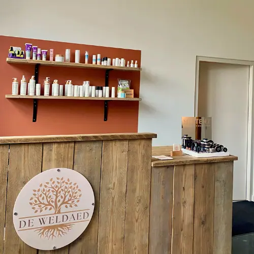
Puur wat je huid nodig heeft
In de salon werken we met PUURR, een Nederlands merk met voor iedere huid iets moois. De producten zijn 98 tot 100% natuurlijk en een aantal zelfs biologisch.
Niet op dieren getest, zonder parabenen of minerale oliën, en grotendeels in airless verpakkingen zodat er minder conserveringsmiddelen nodig zijn. Heerlijk in de salon, en ook thuis.
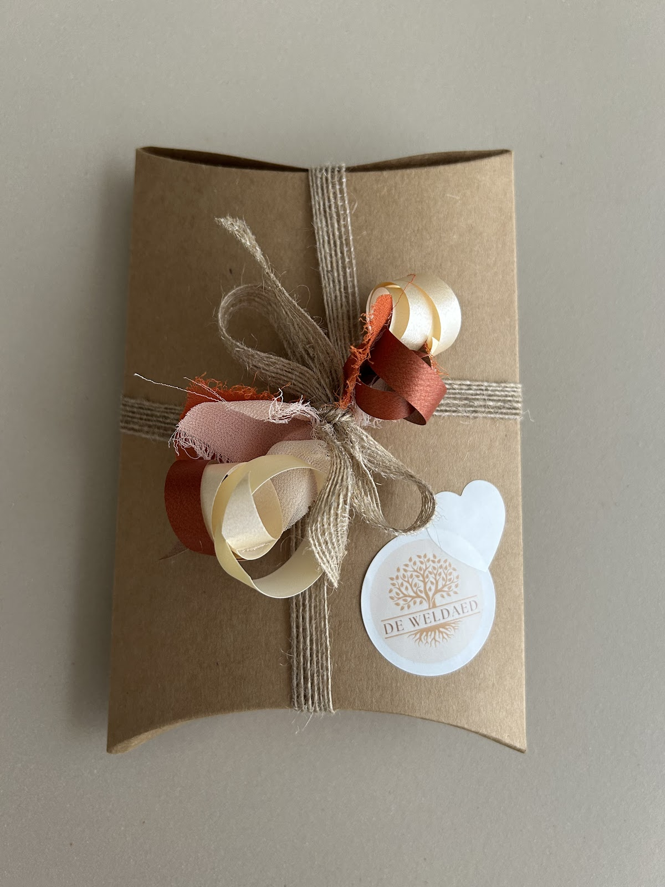
Vandaag mocht ik mijn cadeaubon inleveren en ontving een behandeling en massage van Lotte. Wat een weldaed! Kundig, gezellig en de ruimte is prachtig! Ik heb meteen weer een afspraak gemaakt. Dank je wel Lotte!
Iemand verwennen? Bel of mail ons voor een cadeaubon.
“Wat is de salon mooi geworden! Vanaf het moment dat je binnenkomt voel je je welkom. Of je nu zin hebt in een praatje of juist in ontspanning, Sandy, Lotte en Dominique maken het altijd fijn. Professioneel, vriendelijk en persoonlijk , ga zo door dames!”
“Ik ben er heel goed geadviseerd , en geholpen , het door hun verstrekte spray en olie heeft een goed resultaat gebracht ! erg blij mee !”
“Daar wordt je lekker verwend, en goed geholpen, absoluut een keer naar toe gaan.”
“Vriendelijke dames, prima prijs-kwaliteits verhouding.”
Een plek om even helemaal tot rust te komen
Eikenhouten spanten, een knusse kachel en uitzicht op het groen. Zo voelt een behandeling bij ons als een klein uitje.
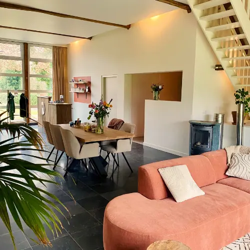
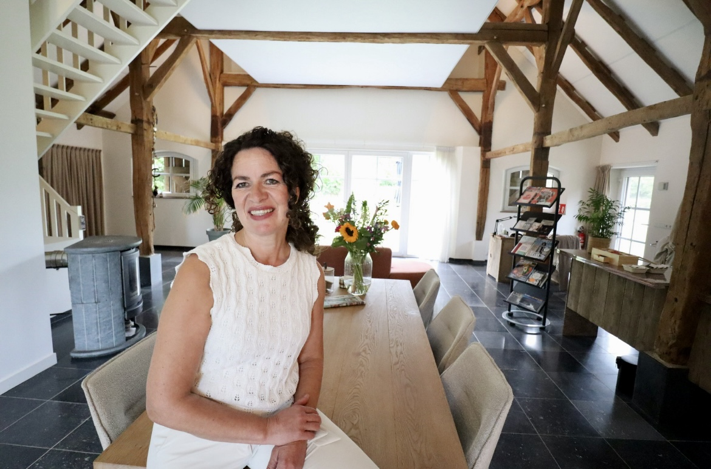
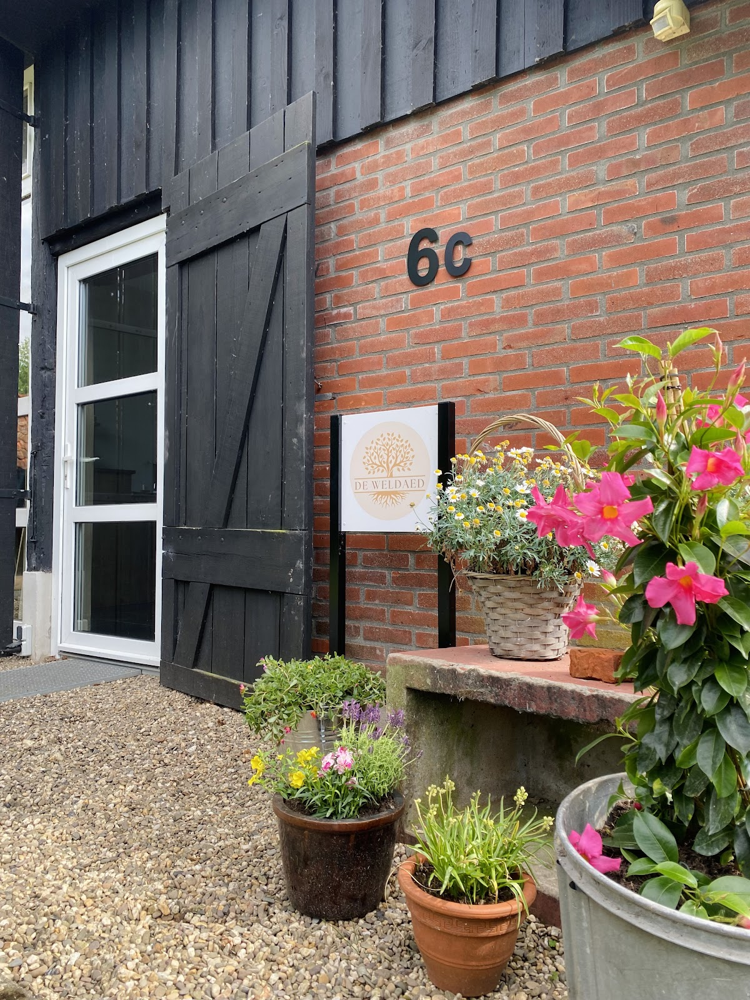
Tot gauw aan de Barloseweg.
We werken op afspraak. Bel of mail ons, of stuur ons een bericht via het formulier. Heb je eerst advies nodig? Wij helpen je heel graag.
06 28172017- info@deweldaedaalten.nl
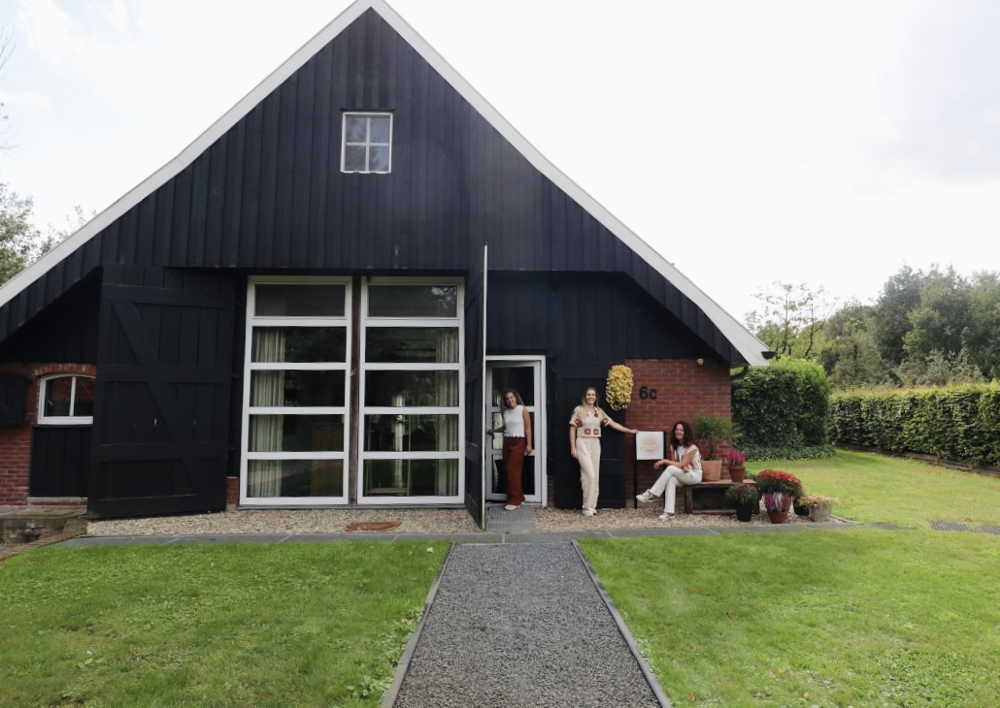